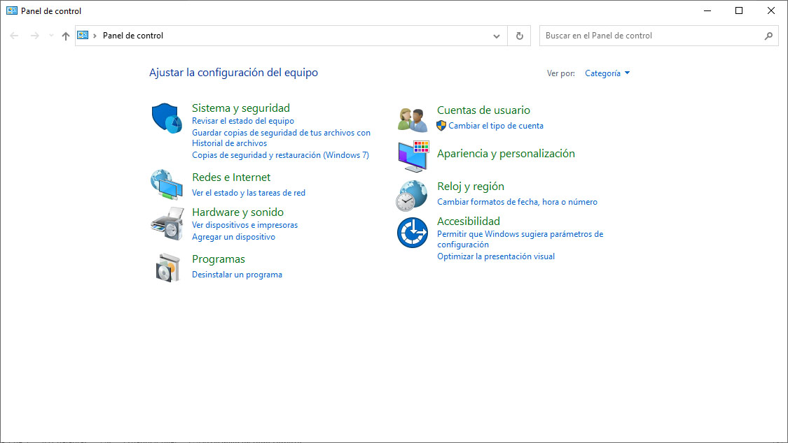
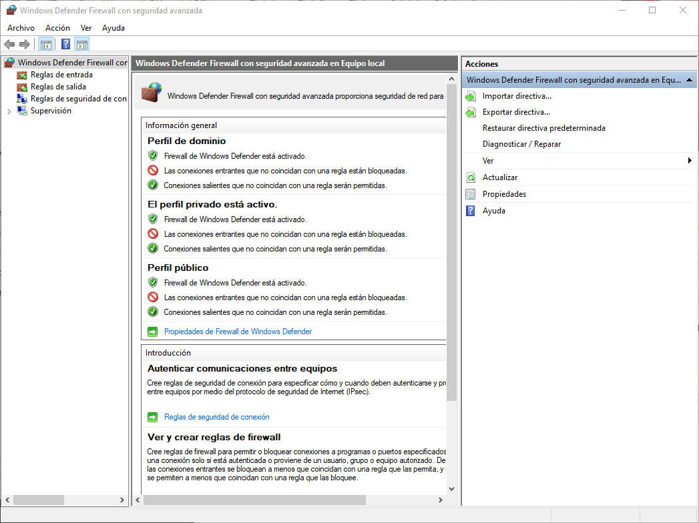
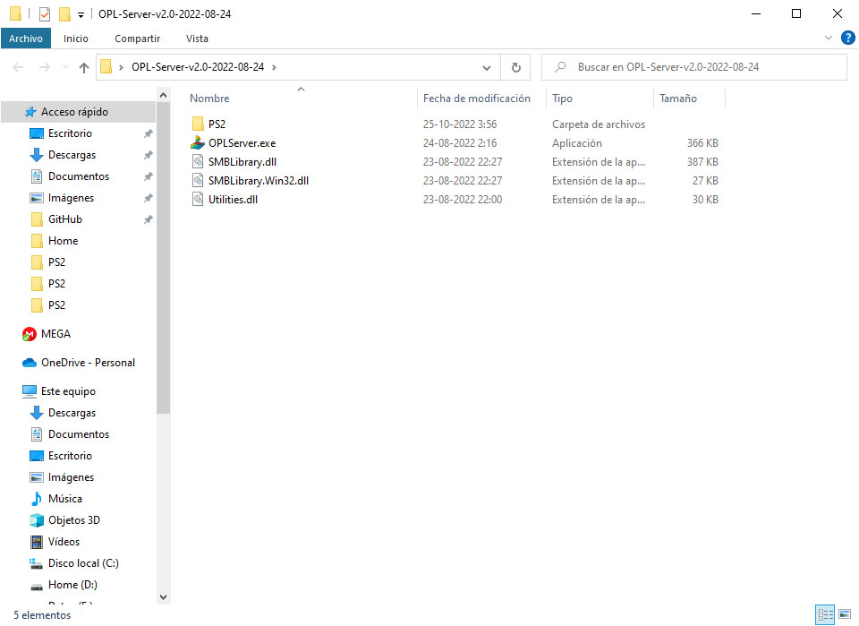
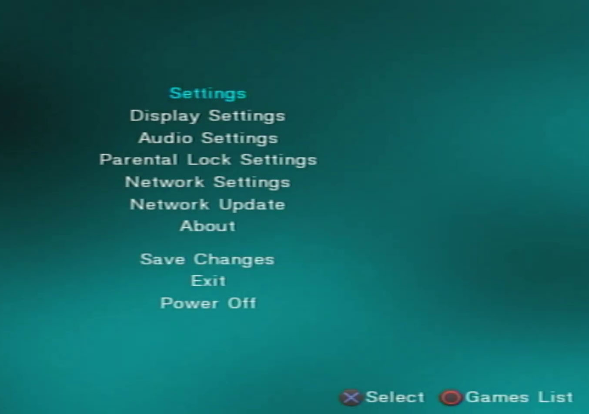
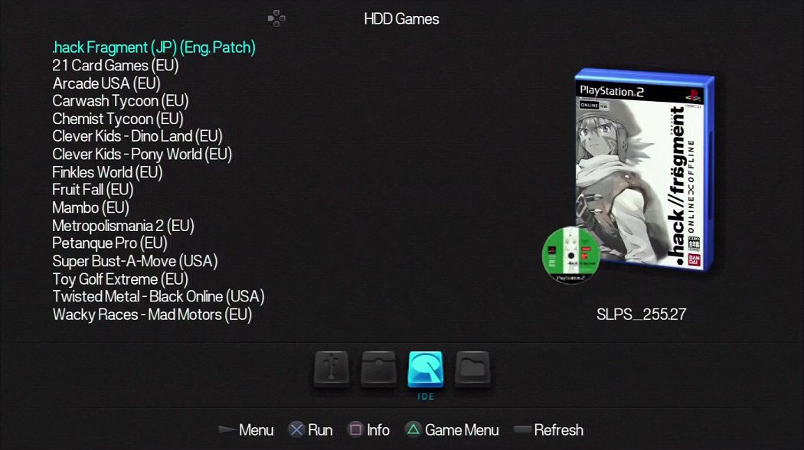

PS2 OPL Server
Para esta Guia
Requisitos para este tutorial
- Un sistema Windows 7 o superior
Para implementar este tutorial
- Nos vamos a panel de control de nuestra computadora
- Dentro del panel de control buscamos
- Sistemas y seguridad/firewall de Windows Defender 
- Y en el menú nos vamos a Configuración avanzada 
- En Reglas de entrada en acciones le damos a nueva regla
- Le asignamos Puerto siguiente
- En puerto locales especifico:
1024 - Le damos a siguiente/
- Acción le damos a permitir la conexión siguiente
- En Perfil siguiente
- En nombre le asignamos en nombre
PS2Entrada - Y en descripción le asignamos
-Entrada PS2 - Y finalizar
- En programas y características
- Nos vamos a Activar o desactivar las características de Windows
- Dentro vamos a buscar Compatibilidad con el protocolo para compartir Archivos SMB 1.0/CIFS
- Y seleccionamos Servidor SMB 1.0/CIFS
- Y le damos aceptar
- Buscará y Liberia para los archivos necesarios para esta característica
- Podemos reiniciar el ordenador para completar bien la instalación
- Para continuar debemos descomprimir el archivo OPL-Server…
- Por primera vez debemos compartir la carpeta
PS2

- Para esto demos compartir la carpeta le damos a clip derecho sobre la carpeta
PS2y en propiedades - En la pestaña de Compartir le damos a y le damos en Compartir… y seleccionamos todos y agregamos
- Le damos los permisos de Lectura y escritura y al botón Compartir y listo
- Y en uso compartido avanzado le damos al botón
- Le damos a compartir esta carpeta y en los permisos le damos a Todos con control total y aceptar y aceptar y cerramos la ventana
- para agregar juegos los pasamos a la carpeta
PS2 - sí están en ISO los colocamos en la carpeta llamada
DVDdentro dePS2 - si queremos pasarle las caratulas y dejarlo listo
- abrimos OPL Manager.exe como administrador
- se queremos seleccionar una ruta y no nos aparece la opción
- vamos a Ajustes/cambiar Modo (carpeta OPL)
- y e ruta seleccionamos la carpeta
PS2recién creada y compartida - y creamos las carpetas faltantes para automatizar el programa
- una vez listo nuestro programa nos detectara nuestros juegos
- solo nos quedaría corregir el nombre con el botón intentar actualizar el nombre del juego
- sí nos da un error debemos reducir el nombre a menos de 32 caracteres
- y estaríamos listo
- Para descargar la caratulas vos vamos a Operaciones/Descargar Imágenes
- En la ventana seleccionamos todo lo queremos descargar en Opciones de descarga
- Y le damos a comenzar y una vez terminado le damos aceptar y cerramos la ventana
- Y estaría todo listo y podemos cerrar todo el programa
- Dentro de la carpeta buscamos el archivo OPLServer.exe y lo abrimos como administrador
- Le damos los permisos necesarios para ejecutar nuestra aplicación
- Para arrancar nuestro servidor le damos a Server is stopped (press to start)
- En nuestra PS2 nos vamos al Open PS2 Loader 
- Muy importante que nuestra consola PS2 este conectada a la misma RED de nuestro ordenador (PC o Notebook)
- Nos vamos a configuración de OPL en Settings (Configuración principal)
- Nos vamos a ETH Prefix Path (Ruta predeterminada conexión de red) en not set (sin definir)
- Y en ETH Device Star Mode (Modo de inicio para RED) en Auto (Automatico)
- Y le damos en aceptar y nos daría Error para eso
- Nos vamos a Network Settings (Conexión de red)
- En advanced options (Opciones avanzadas) lo dejamos en On (activado)
- Y en addres Type (Tipo de dirección) lo dejamos en IP
- Y le asígnanos la ip de nuestro PC o notebook para esto en nuestro equipo colocamos el comando CMD en inicio y abrimos la terminal y colocamos el siguiente comando
ipconfig - Y buscamos la ip del dispositivo (Wifi o Ethernet) dependiendo de cómo esté conectado nuestro equipo
- Y en port(puerto) lo dejamos en en 1024
- Y en Share (Unidad o carpeta compartida) colocaremos el nombre de la carpeta compartida
PS2 - Y listo le damos a aceptar con

- Y le damos a Save Changes (Guardar cambios)
- Y nos vamos hacia tras con para ir a SMB 
- Si todo salió bien nos mostrar nuestros juegos recién cargados en nuestra PS2
- Y podemos abrir para probar nuestros juegos y estaríamos listo
- Recomendaciones para que esto funciones
- Tiene estar nuestro equipo en la misma RED y todas las configuraciones necesarias
- Puede cambiar la IP de nuestro Equipo cada 7 días esto se debe al Moden para esto hay q seleccionar la nueva IP asignada de nuestro moden
- Y estaría lista para poder jugar nuestros juegos
×